case study · ux/ui design
helping students find community
Campfire, an app that helps students find clubs and communities that match their interests on a large, diverse campus.
the app


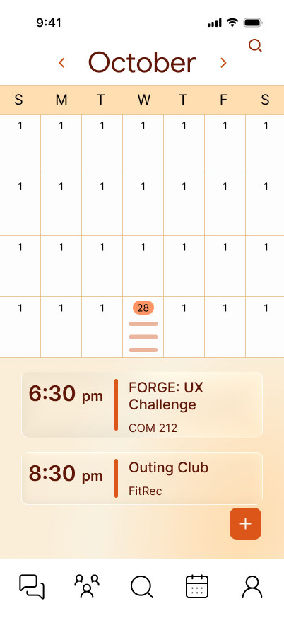
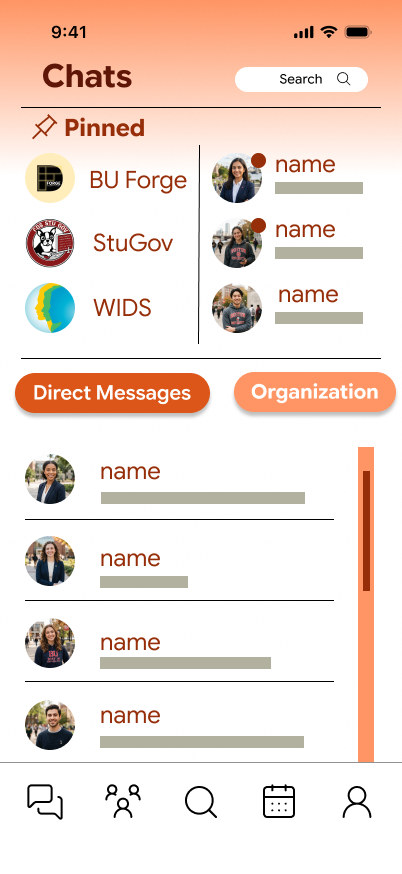
Welcome, explore, profile, calendar and chat screens from our final prototype.
The problem
FORGE’s October UX challenge introduced Campfire: a space where any student, no matter how specific their interest, can find the small group of people on campus already gathering around it. The brief described a familiar problem. Every fall, thousands of new students arrive on a huge campus and still end up eating lunch alone. Club fairs are overwhelming and easy to forget by the second week, it’s not clear how to join, and it’s hard to tell which clubs are actually active and which are just a name on a list.
The brief suggested three routes, and our app ended up covering all three:
- Discover: find clubs that match specific interests, including the smaller, niche ones, not just the biggest organizations.
- Connect: lower the barrier to the first step by previewing a club’s vibe, seeing upcoming meetups, or messaging someone before showing up alone.
- Navigate: figure out where and when clubs meet, and fit it all around a packed schedule.
We narrowed our ideas down to a mobile app where students swipe through clubs, a little like a dating app, and keep track of club events on a calendar.
Who we designed for
We wrote three personas, each a BU student at a different stage. Mia is a freshman who is overwhelmed by how many clubs there are, prefers small groups, and has niche hobbies like embroidery. Maya is a sophomore who transferred into Questrom and wants professional development and a core social group. Kevin, my persona, is a junior who transferred from the west coast, works 18 to 20 hours a week, and finds existing cliques intimidating.
Between them, they needed a way to find smaller communities, clear information about when and where clubs meet, and ways to get involved without a big time commitment.
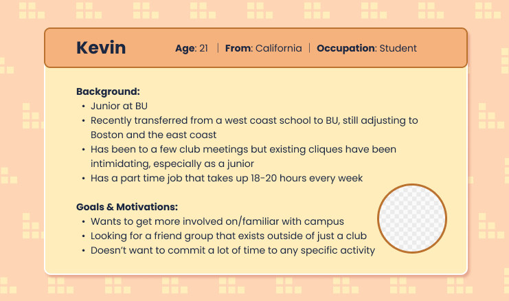
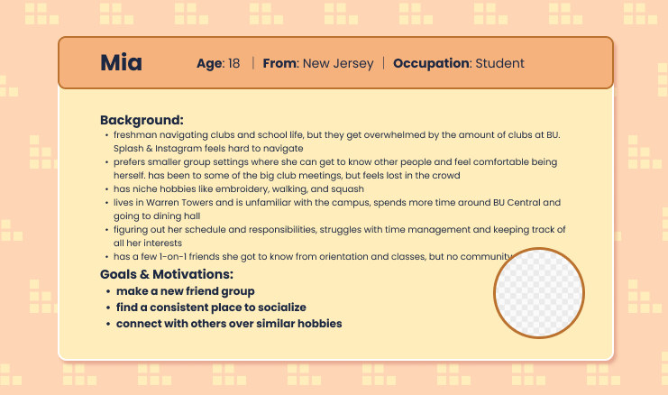
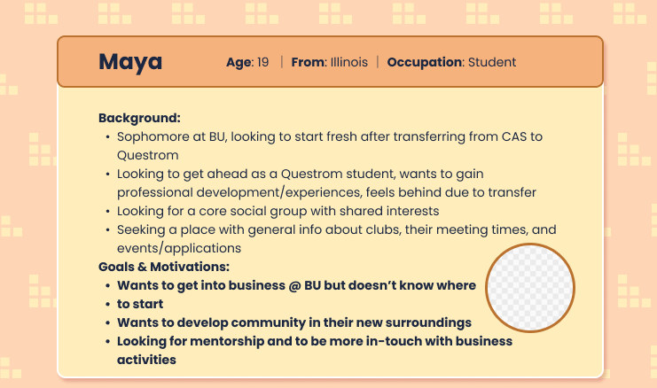
User flow
We listed the features our personas needed, including club swiping, filtered search, a calendar of events, messaging and e-board profiles. Then we mapped how they fit together. After onboarding, students land on a home page that branches into four sections: Profile, Messages, Explore and Calendar. There were four of us, so each person took one section, and I took Profile.
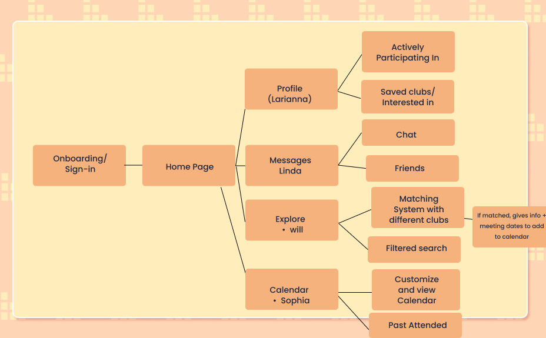
Branding
In the first week, we put together a mood board and our own brand guidelines. The palette is built around a warm campfire orange, with soft peach, butter yellow and cream, and a deep brown for buttons. We tried more than a dozen typefaces for the name before choosing a hand-drawn script, which became the wordmark on the welcome screen.
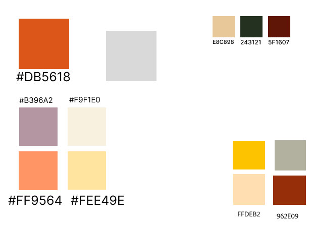
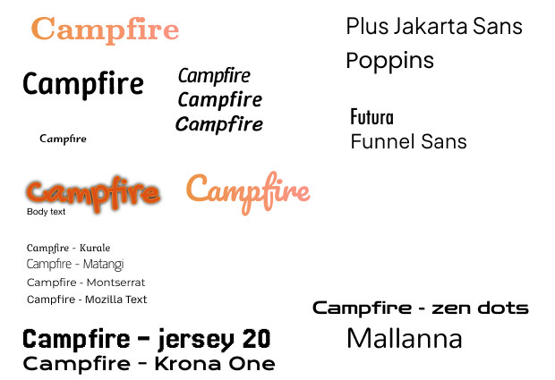
Low to high fidelity
We started with low fidelity screens to settle the layout and features before adding color, and presented them to the group. Then we built them out into a high fidelity prototype in Figma. The calendar shows the jump: the layout stayed the same, and the high fidelity version brought in the brand colors, a warm gradient, highlighted day labels and softer event cards.

My part
I designed and prototyped the profile screens: the student’s own profile, other students’ profiles, and club profiles. I also helped with the overall design and branding, including the color palette and typeface choices, and gave feedback on everything we made as a group.
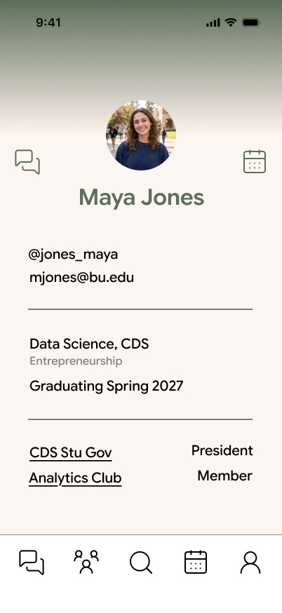
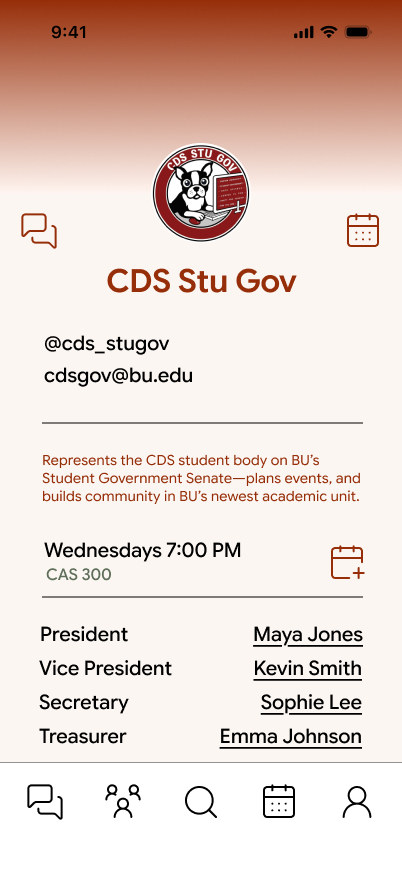
- One layout, three kinds of profile. Every profile follows the same order (photo, name, contact, details, clubs), so students only have to learn it once. The header color shows whose page you’re on: orange for your own, green for another student, and rust for a club.
- Your profile and someone else’s. Your own profile has an edit button, your phone number, and account options. Another student’s profile leaves out the phone number and adds message and calendar buttons, so it’s easy to reach out before showing up alone.
- Clubs that look active. A club’s profile shows what it does, when and where it meets, with a button to add the meeting to your calendar, and who runs it. Students can tell it’s an active club and not just a name on a list.
- People and clubs connect. Students’ clubs are listed with their role, like President or Member, and a club lists its e-board by name. The details match across screens: Maya and Kevin are president and vice president of CDS Stu Gov on their own profiles and on the club’s.
Result
An app that allows students to swipe through campus organizations, add events to a calendar, view student and club profiles, and chat with each other. Onboarding introduces the app with the three routes from the brief: Discover Clubs, Find a Community, and Navigate Times.

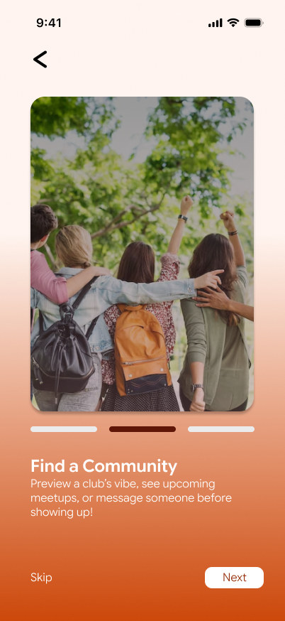
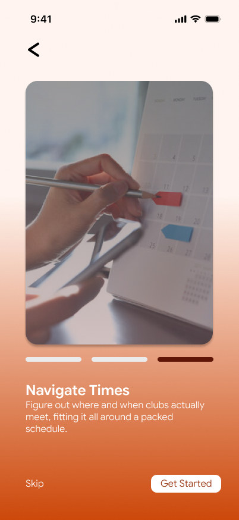
Reflection
[What worked, what you would change, and what you would do next, such as testing the prototype with students.]